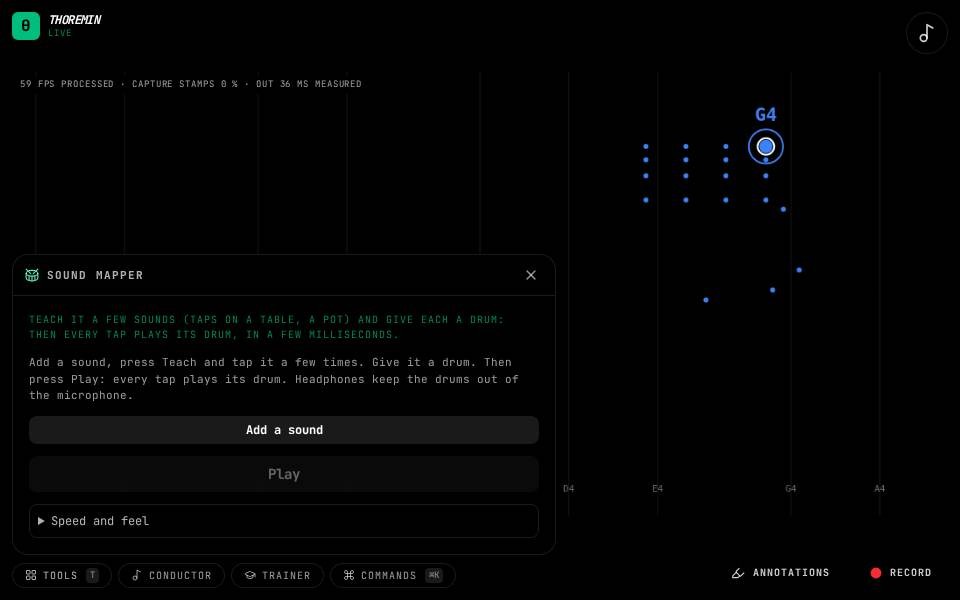

Sound mapper

What to do
- Open Tools, then Sound mapper, and press Add a sound.
- Press Teach and tap that spot (a table, a pot) 6 to 10 times, then Done. Do the same for another spot.
- Pick a drum for each, press Play, and tap away.
Turn the things around you into a drum kit. Teach it a few sounds, give each one a drum, and every tap plays its drum straight away, a few milliseconds after you hit. It plays under whatever instrument is loaded.
Teaching it well
Tap the way you will play: soft and hard, the middle and the edge of the same spot. The tool listens to the first few milliseconds of each tap, so two spots that sound different there (a table's middle and its edge, a pot, a mug) are easy; two that sound alike are not. A sound it was never taught plays nothing. Use headphones if you can: from a speaker the drums come back into the microphone.
Speed and feel
Listen before playing is how much of a tap it hears before the drum starts (4 ms by default): longer is surer, but later. Then check for listens a little longer and, if it hears a different sound, swaps the drum without a gap (set it to 0 to never swap). Harder tap, louder drum sets how much the strength of a tap carries into the drum, and Drum volume sets the drum's level. The number beside each hit is the time from your tap to the drum inside the app; the microphone and the speaker add their own.